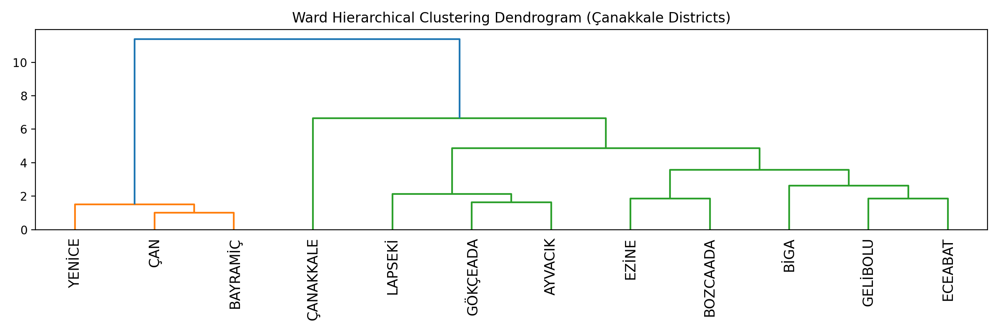
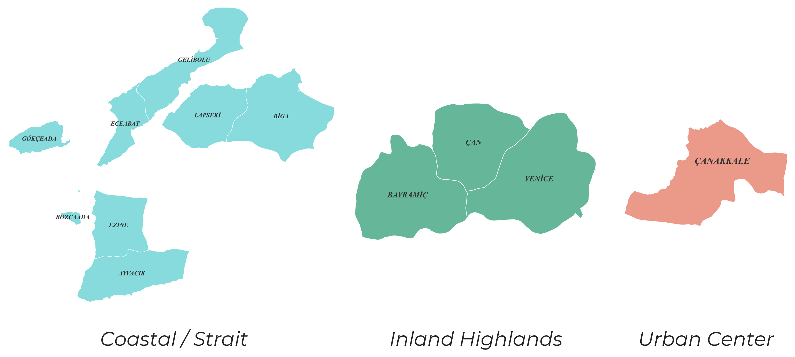

District Grouping in Çanakkale
An Integrated Typology and Clustering Analysis of Districts in Çanakkale Province
Abstract
This study develops a spatial typology of the districts of Çanakkale Province by combining an expert-driven qualitative classification with two data-driven clustering methods (K-Means and Ward hierarchical clustering). Çanakkale's spatial structure reveals a clear duality shaped by geography: coastal and strait-oriented districts versus inland highland districts. This divide reflects fundamental differences in accessibility, economic function, and physical terrain. While the expert typology provides a narrative understanding of spatial roles — highlighting strategic corridors, productive coastal zones, and service centers — the clustering models confirm that these patterns are strongly embedded in the data, with coastal presence, terrain ruggedness, and urban intensity emerging as the primary structuring forces.

1. Expert Typology
The expert classification organizes districts into six spatial groups according to their key characteristics, driving factors, and resulting planning implications.
| Spatial group | Key characteristics | Driving factors | Planning implications |
|---|---|---|---|
| Strait Corridor | Strategic, highly connected | Narrow geography, transport flows | Logistics, defense, connectivity |
| Marmara Coast | Economically integrated | Proximity to Marmara networks | Production, trade, regional integration |
| Aegean Lowland | Agricultural + settlement mix | Flat terrain, fertile land | Agro-economy, balanced development |
| Rugged Aegean | Dispersed, less accessible | Hilly terrain, peripheral location | Tourism niche, ecological planning |
| Inland Highlands | Isolated, physically constrained | Elevation, slope | Forestry, resilience, infrastructure access |
| Urban Center | Service hub (Çanakkale Merkez) | Population density, centrality | Urban services, governance, regional anchor |

2. Data-driven Clustering
Two unsupervised clustering methods were applied to the district feature set to test whether the expert typology is reflected in measurable spatial attributes.
2.1 K-Means Clustering
K-Means partitions districts into $k$ clusters by minimizing the within-cluster sum of squared distances between each district's feature vector and its assigned cluster centroid:
where $S_i$ is the set of districts in cluster $i$, $\mathbf{x}$ is a district's feature vector, and $\boldsymbol{\mu}_i$ is the centroid (mean feature vector) of cluster $i$.

2.2 Ward Hierarchical Clustering
Ward's method builds a hierarchy by successively merging the pair of clusters whose union produces the smallest increase in total within-cluster variance. The merge cost between clusters $A$ and $B$ is:
where $n_A$ and $n_B$ are the numbers of districts in clusters $A$ and $B$, and $\boldsymbol{\mu}_A$, $\boldsymbol{\mu}_B$ are their centroids.


2.3 Clustering Results
| Method | Key pattern identified | Interpretation |
|---|---|---|
| K-Means | 3 dominant groups | Coast vs inland vs urban outlier |
| Merkez as outlier | Strong urban centrality | |
| Coastal districts merged | Shared economic & geographic traits | |
| Ward | Clear district pairings | Functional similarity |
| Gelibolu – Eceabat | Strait corridor system | |
| Ezine – Bozcaada | Agrarian coastal linkage | |
| Gökçeada – Ayvacık | Rugged/peripheral Aegean | |
| Yenice – Çan – Bayramiç | Strong inland cluster; late merge with coast confirms the inland–coastal divide |
3. Synthesis
While the expert typology provides a narrative understanding of spatial roles — highlighting strategic corridors, productive coastal zones, and service centers — the clustering models (K-Means and Ward) confirm that these patterns are strongly embedded in the data. Coastal presence, terrain ruggedness, and urban intensity emerge as the primary structuring forces.
Together, both approaches suggest a simple but powerful planning logic:
- Coastal and strait areas → connectivity, maritime economy, tourism
- Inland highlands → agriculture, forestry, accessibility, resilience
- Çanakkale Merkez → service hub with distinct urban functions
This synthesis demonstrates that spatial patterns are interpretable, measurable, and policy-relevant.
3.1 Consolidated Zone Typology
| Zone type | Strategic direction |
|---|---|
| Coastal / Strait | Maritime economy, logistics, tourism |
| Inland Highlands | Agro-forestry, resilience, accessibility |
| Urban Center | Services, governance, regional coordination |

4. Conclusion
Çanakkale's spatial structure reveals a clear, measurable duality shaped by geography. The convergence of expert judgment and two independent clustering methods on the same coastal–inland–urban structure indicates that the typology is robust rather than arbitrary, providing a defensible evidence base for differentiated regional planning across the province.